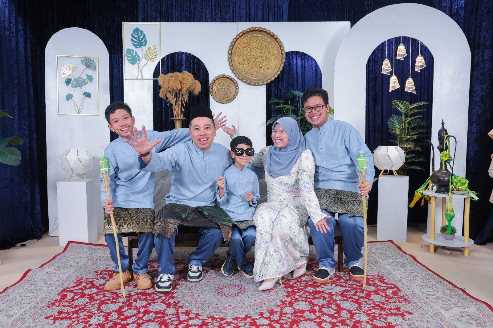
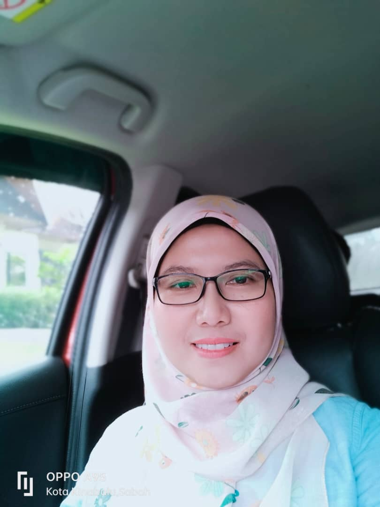
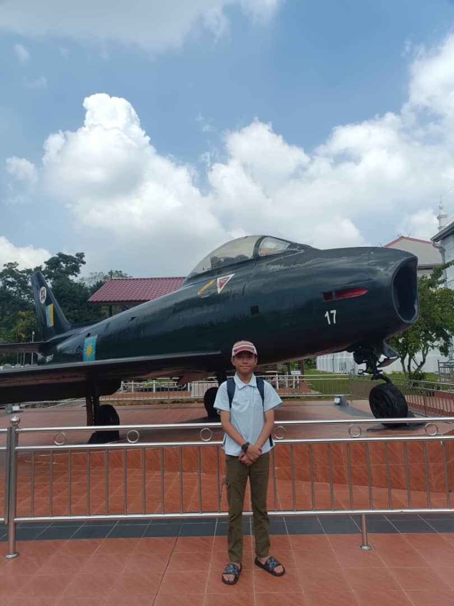
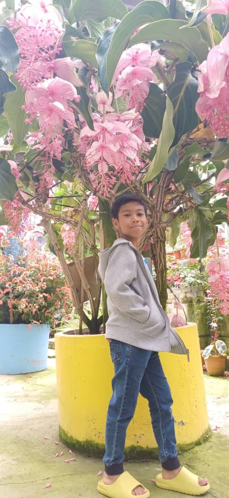

|
Home
About Me
Education
Family
My Favourites |
My FamilyThe people who matter the most in my life. |
|
 My Family This is my family. Whenever im with them, it is always filled with nonstop fun and laughter every day. I love my family with my whole heart. |
FatherName: Mohd Azrool Rizal bin Mohd Azahari My father is a very hardworking person. Every problem that happened in the house, he can fix it easily. My father also knows how to cook very well! All of us really enjoys his cooking so much. My father works as an Entomologist, which is a scientist who studies insects. My father is an amazing person. I will always look up to him and want to be as great as him. Here are some of the foods my dad cooks!
|
MotherName: Nursyahida binti Abd Rahman When it comes to my mother, she is VERY strict, but always gave me a valuable and useful advices that help me to go through my tough days. Despite her strictness, my mother is actually fun to be around! My mother is a science teacher at SMK Kudat II, she is loved by every student there! Seeing students interaction with my mother will always made me smile because of how funny it is. |
 |

|
The Oldest SiblingName: Muhammad Nirman Atif bin Mohd Azrool Rizal I am the first and the oldest sibling! I usually help my mother and father with house chores whenever im free. Being the first child and the oldest brother has it's own preassure but nonetheless, i strive to be the best for my family and try to set up a good examples so that my brothers can follow me. |
The Middle SiblingName: Muhammad Niyaz Amsyar bin Mohd Azrool Rizal My brother here has a very unique interest, he loves planes and tanks so much to the point he knows about them more than common people do. My brother wants to be a pilot one day. He even loves playing those flight simulator games every single day. With his huge knowledge about planes, Im sure he can achieve his dreams in no time! |
 |
|
 |
The Youngest SiblingName: Muhammad Nadhif Anaqi bin Mohd Azrool Rizal He may seems young but if you challenge him in a chess, theres a high chance he will win. Despite being great at chess, my little brother here still act like his age. He is a very cheerful person and always have something up to his sleeves. |
| © 2026 Nirman Atif. All Rights Reserved. | Best viewed on Google Chrome at 1920x1080 resolution | Last Updated: June 2026 |